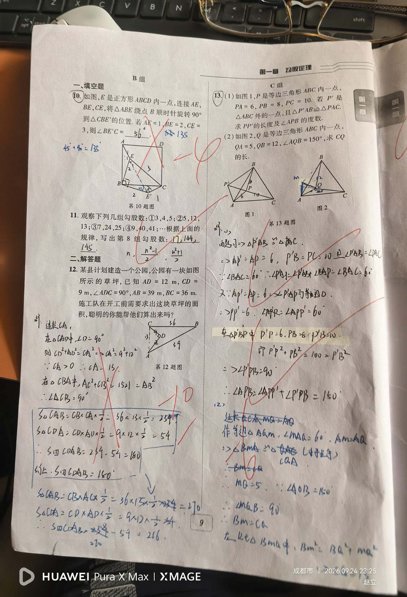

① ABCD 是正方形；② E 是正方形内一点；③ 将 △ABE 绕点 B 顺时针旋转 90° 得 △CBE′；④ AE = 1，BE = 2，CE = 3。
求 ∠BE′C 的度数。（若琳填 56°，被红笔判错；正确答案 135°）
① 旋转 90° 是全等变换 ⇒ △ABE ≌ △CBE′ ⇒ BE′ = BE = 2，CE′ = AE = 1，且 ∠EBE′ = 90°； ② 连接 EE′，在等腰直角 △BEE′ 中：EE′ = √(BE² + BE′²) = √(2² + 2²) = 2√2，∠BE′E = 45°； ③ 在 △CEE′ 中看三边：CE = 3，CE′ = 1，EE′ = 2√2； ④ 用勾股定理的逆定理检验：CE′² + EE′² = 1² + (2√2)² = 1 + 8 = 9 = 3² = CE² ⇒ △CEE′ 是直角三角形，且 ∠EE′C = 90°； ⑤ 所以 ∠BE′C = ∠BE′E + ∠EE′C = 45° + 90° = 135°。
① 看到「旋转 90°」只想得到角相等，忘了它同时给出「BE′ = BE、CE′ = AE、∠EBE′ = 90°」三组条件； ② 不连接 EE′，白白丢掉等腰直角 △BEE′ 这个关键桥梁； ③ 在 △CEE′ 中看到 1、2√2、3 三边，想不到用「勾股定理逆定理」判断直角； ④ 把 ∠BE′C 直接当成某个已知角，没有拆成 ∠BE′E + ∠EE′C 两段来算； ⑤ 结果写成 56°（若琳的错误答案）—— 没抓住「45° + 90°」这个必然结构。
① 旋转的性质（对应线段相等、对应角相等、旋转角相等）； ② 等腰直角三角形的性质与斜边计算（EE′ = 2√2）； ③ 勾股定理及其逆定理（由三边判定直角三角形）； ④ 角的和差拆分（∠BE′C = ∠BE′E + ∠EE′C）； ⑤ 正方形四边相等、四角为 90°。 📌 出处：本页含第 10、11、12 题；若琳第10题填 56°，正确答案 135°。